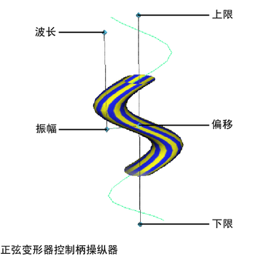

创建正弦变形器之后，其控制柄会显示在场景中，而其节点会在“通道盒”(Channel Box)中列出。这些节点包括正弦控制柄节点（默认名称：sinenHandle）、正弦控制柄形状节点 (sinenHandleShape) 和正弦变形器节点（默认名称：sinen）。
通过编辑正弦控制柄节点和正弦变形器节点，可以编辑正弦变形器的效果。可以移动（平移）、旋转和缩放正弦控制柄来编辑变形的效果。还可以编辑正弦变形器节点的可设定关键帧属性（通道），这些属性显示在“通道盒”(Channel Box)中。
使用控制柄操纵器编辑正弦变形器
- 选择正弦变形器节点（默认名称为 sineN）。
- 选择“显示操纵器工具”(Show Manipulator Tool)（默认快捷键：T 键）。
- 正弦变形器控制柄上的操纵器允许您以交互方式编辑属性。

- 在场景中，选择正弦变形器控制柄上的操纵器之一。使用鼠标中键拖动以进行编辑。
“通道盒”(Channel Box)将更新正在更改的值。
通过移动、旋转或缩放控制柄来编辑正弦变形器
- 选择正弦变形器控制柄节点（默认名称为 sineNHandle）。
- 移动（平移）、旋转或缩放控制柄，以便更改变形效果。
- 通过按 Insert 或 Home 键，移动枢轴点，然后再次按 Insert 或 Home 键，可以移动或旋转控制柄枢轴点。
- 请记住，您可以访问变形器控制柄的局部轴（“显示 > 变换显示 > 局部旋转轴”(Display > Transform Display > Local Rotation Axes)）、旋转和缩放枢轴（“显示 > 变换显示 > 旋转枢轴”(Display > Transform Display > Rotate Pivots)或“缩放枢轴”(Scale Pivots)）以及选择控制柄（“显示 > 变换显示 > 选择控制柄”(Display > Transform Display > Selection Handles)）。
使用“通道盒”(Channel Box)编辑正弦变形器
- 选择正弦变形器节点（默认名称为 sineN）。
选择正弦变形器节点的一种快捷方法是选择要变形的对象，然后从“通道盒”(Channel Box)的正弦变形器节点历史中选择正弦变形器节点（在“输入”(INPUTS)下）。
可以使用“通道控制”(Channel Control)编辑器（选择窗口 > 常规编辑器 > 通道控制(Window > General Editors > Channel Control)）在“通道盒”(Channel Box)中控制要列为可设定关键帧属性（通道）的属性。
- 单击要编辑的通道的名称。
- 在场景中，单击鼠标中键并左右移动鼠标。通过移动鼠标，可以交互方式更改选定通道的值。移动鼠标时，请注意按 Ctrl 键可以提供更精细的控制，按 Shift 键可提供精细度较小的控制。
使用属性编辑器编辑正弦变形器
- 选择正弦变形器节点（默认名称为 sineN）。
- 打开“属性编辑器”(Attribute Editor)。
- 编辑属性。
请参见正弦。
提示： 如果要为此变形器创建衰减（或渐变效果），以使变形效果在指定的距离后减少或衰减，请使用
组件标记。请参见
创建变形器衰减。
删除正弦变形器
- 选择正弦变形器的控制柄。
- 选择“编辑 > 删除”(Edit > Delete)，或者按 Backspace 或 Delete 键。
- 正弦变形器控制柄、正弦变形器控制柄形状和正弦变形器节点都将删除。但是，对象仍将调整节点作为输入节点，因此您所做的任何调整都将保留。此外，请注意，不会删除构成变形求值的各种输入节点。